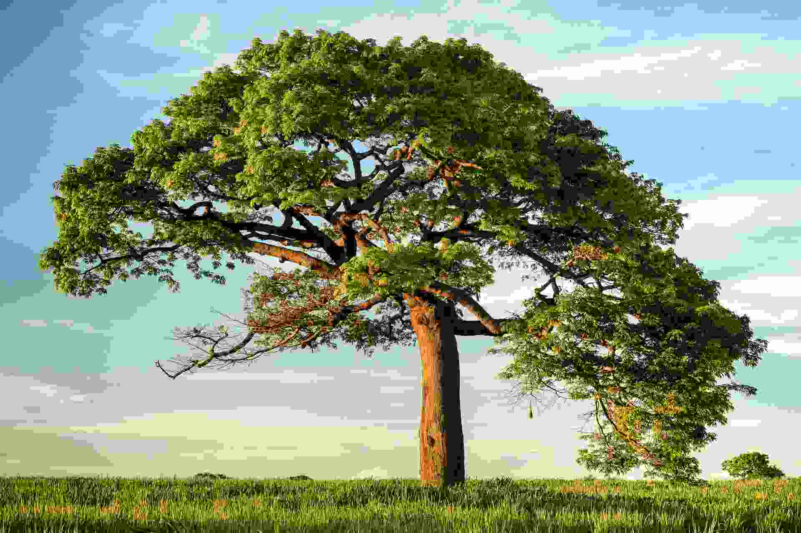

Call to Action

Rooted in Community
GreenQC Hub connects citizens, local green enterprises, and volunteers to build a sustainable Quezon City. From tree planting to circular economy, we turn intention into action.

GreenQC Hub connects citizens, local green enterprises, and volunteers to build a sustainable Quezon City. From tree planting to circular economy, we turn intention into action.